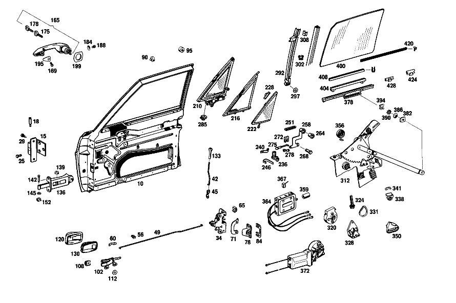

| № | Артикул | Название | Кол. | Примечание | Ограничение |
|---|---|---|---|---|---|
| 10 | A 109 720 08 05 | ОСТОВ ДВЕРИ | 1 | СПРАВА | |
| 15 | A 108 720 02 37 | ШАРНИР | - | ||
| 15 | A 108 720 01 37 | ШАРНИР | 2 | СПРАВА [065] VOR EINBAU SCHARNIERBOLZEN VON ANDERER SEITE EINPRESSEN; SCHARNIERBOLZENKOPF MUSS NACH OBEN ZEIGEN. | |
| 25 | A 108 990 01 22 | болт | 12 | ||
| 29 | N 000933 008153 | Винт | - | M8X25\-8.8 | |
| 29 | N 304017 008034 | Винт с 6-гранной головкой | 8 | M8X25 | |
| 34 | A 115 720 02 35 | ЗАМОК | 1 | RIGHT, с DOOR INNER LOCK Рулевое управление: Вправо [004] 015 FROM CHASSIS 002131 | |
| 42 | A 108 723 00 39 | ПРЕДОХР. ШТАНГА | 2 | ||
| 45 | A 100 994 01 60 | предохранитель | 2 | ||
| 49 | A 108 720 02 92 | ТЯГА | - | ||
| 56 | A 002 988 83 78 | Скоба | - | ||
| 56 | A 006 988 63 78 | Скоба | 4 | ||
| 60 | A 100 994 01 60 | предохранитель | 2 | ||
| 65 | A 000 990 83 91 | ГАЙКОДЕРЖАТЕЛЬ | - | ||
| 65 | A 000 990 71 91 | Гайкодержатель | 8 | [041] 018 FROM CHASSIS 005095; 056 FROM CHASSIS 003143 | |
| 71 | A 108 723 02 24 | ОБРАМЛЕНИЕ | 1 | СПРАВА | |
| 78 | A 115 720 06 04 | Скоба замка | 1 | СПРАВА [004] 015 FROM CHASSIS 002131 [027] 016 UP TO CHASSIS 001861; 018 UP TO CHASSIS 002048 | |
| 84 | A 100 723 03 11 | ПЛАСТИНА | NB | [027] 016 UP TO CHASSIS 001861; 018 UP TO CHASSIS 002048 | |
| 90 | A 111 987 10 40 | РЕЗИНОВЫЙ УПОР | 2 | [005] 015 FROM CHASSIS 001640 | |
| 95 | A 108 987 03 40 | РЕЗИНОВЫЙ УПОР | 2 | [006] 015 FROM CHASSIS 002134 | |
| 102 | A 108 760 06 61 | Управление | 1 | СПРАВА | |
| 108 | A 000 990 83 91 | ГАЙКОДЕРЖАТЕЛЬ | - | ||
| 108 | A 000 990 71 91 | Гайкодержатель | 4 | ||
| 112 | A 000 994 05 10 | Диск | 4 | ||
| 120 | A 108 766 06 11 | Ковшовая платформа | 1 | СПРАВА [008] 015 FROM CHASSIS 002120 | |
| 130 | A 108 766 04 90 | Вставка | 1 | СПРАВА [008] 015 FROM CHASSIS 002120 | |
| 133 | A 110 760 05 65 | ПРЕДОХРАНИТЕЛЬНАЯ ГОЛОВКА | 2 | ||
| 136 | A 108 720 00 16 | DOOR CHECK | 2 | ||
| 139 | A 000 984 07 58 | - РОЛИК | - | ||
| 139 | A 314 723 00 68 | - Ролик | 4 | ||
| 142 | A 108 991 00 07 | Палец | 2 | ||
| 145 | A 108 990 01 40 | Диск | NB | ||
| 152 | N 912001 006002 | Механический фиксатор | 2 | 6MM | |
| 165 | A 108 760 12 59 | РУЧКА ДВЕРИ | 1 | БЕЗ КЛЮЧА,СПРАВА [004] 015 FROM CHASSIS 002131 [009] ПРИ ЗАКАЗЕ УКАЗАТЬ НОМЕР КОМПЛЕКТА ЗАМКОВ | |
| 169 | A 120 766 00 15 | - БОЛТ | 2 | [402] БОЛЬШЕ НЕ ПОСТАВЛЯЕТСЯ | |
| 175 | A 000 760 04 06 | - Главный ключ | 1 | ОСНОВН. КЛЮЧ HUF [004] 015 FROM CHASSIS 002131 [009] ПРИ ЗАКАЗЕ УКАЗАТЬ НОМЕР КОМПЛЕКТА ЗАМКОВ | |
| 178 | A 000 760 05 06 | - Запасной ключ | 1 | КЛЮЧ ЗАПАСНОЙ HUF [004] 015 FROM CHASSIS 002131 [009] ПРИ ЗАКАЗЕ УКАЗАТЬ НОМЕР КОМПЛЕКТА ЗАМКОВ | |
| 184 | A 111 993 00 26 | ПРУЖИНА ДИСКОВАЯ | - | ||
| 188 | A 110 990 00 12 | БОЛТ | - | ||
| 188 | N 000912 006095 | Винт | 2 | M6X8 | |
| 195 | A 108 766 10 05 | ПОДКЛАДКА | 2 | СПЕРЕДИ [004] 015 FROM CHASSIS 002131 | |
| 199 | A 108 766 12 05 | ПОДКЛАДКА | 1 | СЗАДИ СПРАВА [004] 015 FROM CHASSIS 002131 | |
| 210 | A 108 720 18 55 | СТЕКЛО ПОВОРОТНОЕ | 1 | СПРАВА [043] 018 FROM CHASSIS 005886; 056 FROM CHASSIS 007145 | |
| 216 | A 108 725 02 24 | - УПЛОТНИТЕЛЬ | 1 | СПРАВА | |
| 222 | A 108 720 20 55 | - СТЕКЛО ПОВОРОТНОЕ | 1 | СПРАВА [043] 018 FROM CHASSIS 005886; 056 FROM CHASSIS 007145 | |
| 228 | A 108 725 02 53 | - ПОДШИПНИК | 1 | СВЕРХУ СПРАВА [042] 018 UP TO CHASSIS 005885; 056 UP TO CHASSIS 007144 | |
| 236 | A 108 720 01 27 | - ПОДШИПНИК | 2 | ВНУТР. | |
| 240 | A 100 725 00 64 | - ПРУЖИНА | 2 | ||
| 246 | A 100 725 02 64 | - ПРУЖИНА | 2 | ||
| 251 | A 108 725 01 18 | - ПЛАСТИНА | 2 | ||
| 258 | A 108 720 10 66 | - ЗАМКОВЫЙ БЛОК | 1 | СПРАВА | |
| 264 | A 108 720 00 66 | - ЗАМКОВЫЙ БЛОК | 2 | [004] 015 FROM CHASSIS 002131 | |
| 268 | A 108 725 00 15 | - БОЛТ | 2 | ||
| 272 | N 912002 008001 | - Механический фиксатор | - | ||
| 272 | N 912002 008003 | - Механический фиксатор | 2 | 8 MM | |
| 275 | A 108 720 01 92 | - Тяга | 2 | ||
| 278 | A 108 994 00 60 | - Скоба | 2 | ||
| 285 | A 000 990 83 91 | ГАЙКОДЕРЖАТЕЛЬ | - | ||
| 285 | A 000 990 71 91 | Гайкодержатель | 4 | ||
| 292 | A 108 720 02 15 | ПЛАНКА НАПРАВЛЯЮЩАЯ | 1 | СПРАВА | |
| 297 | A 000 994 05 10 | Диск | 4 | ||
| 302 | A 000 985 29 30 | Направляющая | NB | 2290 MM [404] ЗАКАЗЫВАТЬ ПОГОННЫМИ МЕТРАМИ | |
| 308 | A 002 988 23 78 | Скоба | 6 | ||
| 312 | A 109 720 06 46 | СТЕКЛОПОДЪЕМНИК | 1 | СПРАВА [029] 016 UP TO CHASSIS 001858 EXCEPT FOR, SEE FOOTNOTE 44; 018 UP TO CHASSIS 002019 EXCEPT FOR 001907,001911 [044] 001473, 001548, 001702, 001722, 001786, 001793, 001797, 001801, 001804, 001853- 001857. | |
| 320 | A 000 820 29 07 | - КОРОБКА ПЕРЕДАЧ | 2 | [029] 016 UP TO CHASSIS 001858 EXCEPT FOR, SEE FOOTNOTE 44; 018 UP TO CHASSIS 002019 EXCEPT FOR 001907,001911 [044] 001473, 001548, 001702, 001722, 001786, 001793, 001797, 001801, 001804, 001853- 001857. | |
| 324 | A 000 990 29 22 | - БОЛТ | 6 | [402] БОЛЬШЕ НЕ ПОСТАВЛЯЕТСЯ [029] 016 UP TO CHASSIS 001858 EXCEPT FOR, SEE FOOTNOTE 44; 018 UP TO CHASSIS 002019 EXCEPT FOR 001907,001911 [044] 001473, 001548, 001702, 001722, 001786, 001793, 001797, 001801, 001804, 001853- 001857. | |
| 328 | A 000 820 31 07 | - КОРОБКА ПЕРЕДАЧ | 2 | [029] 016 UP TO CHASSIS 001858 EXCEPT FOR, SEE FOOTNOTE 44; 018 UP TO CHASSIS 002019 EXCEPT FOR 001907,001911 [044] 001473, 001548, 001702, 001722, 001786, 001793, 001797, 001801, 001804, 001853- 001857. | |
| 331 | A 000 824 13 98 | - УПЛОТНИТЕЛЬ | 2 | [029] 016 UP TO CHASSIS 001858 EXCEPT FOR, SEE FOOTNOTE 44; 018 UP TO CHASSIS 002019 EXCEPT FOR 001907,001911 [044] 001473, 001548, 001702, 001722, 001786, 001793, 001797, 001801, 001804, 001853- 001857. [015] 015 FROM CHASSIS 001362 | |
| 338 | A 000 768 04 75 | - УПОР | 1 | СПРАВА [029] 016 UP TO CHASSIS 001858 EXCEPT FOR, SEE FOOTNOTE 44; 018 UP TO CHASSIS 002019 EXCEPT FOR 001907,001911 [044] 001473, 001548, 001702, 001722, 001786, 001793, 001797, 001801, 001804, 001853- 001857. | |
| 341 | A 000 768 01 75 | - УПОР | 2 | [029] 016 UP TO CHASSIS 001858 EXCEPT FOR, SEE FOOTNOTE 44; 018 UP TO CHASSIS 002019 EXCEPT FOR 001907,001911 [044] 001473, 001548, 001702, 001722, 001786, 001793, 001797, 001801, 001804, 001853- 001857. | |
| 350 | A 000 768 09 75 | - Корпус | 1 | STOP, LEFT [026] 016 FROM CHASSIS 002395; 018 FROM CHASSIS 003145; 056 FROM CHASSIS 000022 | |
| 356 | A 000 768 05 05 | - ПРУЖИНА | 2 | ||
| 359 | A 000 821 02 26 | Сцепление, механическое | 2 | [029] 016 UP TO CHASSIS 001858 EXCEPT FOR, SEE FOOTNOTE 44; 018 UP TO CHASSIS 002019 EXCEPT FOR 001907,001911 [044] 001473, 001548, 001702, 001722, 001786, 001793, 001797, 001801, 001804, 001853- 001857. | |
| 364 | A 000 820 11 42 | ЭЛЕКТРОМОТОР | 2 | [029] 016 UP TO CHASSIS 001858 EXCEPT FOR, SEE FOOTNOTE 44; 018 UP TO CHASSIS 002019 EXCEPT FOR 001907,001911 [044] 001473, 001548, 001702, 001722, 001786, 001793, 001797, 001801, 001804, 001853- 001857. | |
| 367 | A 000 824 21 75 | - УГОЛНЫЕ ЩЕТКИ К-Т | - | ||
| 367 | A 000 835 25 75 | - УГОЛНЫЕ ЩЕТКИ К-Т | 4 | [029] 016 UP TO CHASSIS 001858 EXCEPT FOR, SEE FOOTNOTE 44; 018 UP TO CHASSIS 002019 EXCEPT FOR 001907,001911 [044] 001473, 001548, 001702, 001722, 001786, 001793, 001797, 001801, 001804, 001853- 001857. | |
| 372 | A 001 820 04 42 | Электродвигатель | 1 | СПРАВА [030] 016 FROM CHASSIS 001859 ALSO INSTALLED ON, SEE FOOTNOTE 44; 018 FROM CHASSIS 002020 ALSO INSTALLED ON 001907,001911 [044] 001473, 001548, 001702, 001722, 001786, 001793, 001797, 001801, 001804, 001853- 001857. | |
| 378 | A 109 720 02 45 | FE.ПОДЪЕМНАЯ ПЛАНКА | 1 | СПРАВА | |
| 382 | A 113 984 00 37 | ПОЛЗУН | - | [037] INDIVIDUAL PARTS NO LONGER AVAILABLE | |
| 386 | A 000 984 24 56 | Диск | - | [415] ПРИМЕЧ. ПО ЗАМЕНЕ ПРИМЕНИМО ТОЛЬКО ДЛЯ СТОЯЩИХ РЯДОМ ПОЗИЦИЙ [037] INDIVIDUAL PARTS NO LONGER AVAILABLE | |
| 390 | A 000 990 05 48 | Диск | - | [037] INDIVIDUAL PARTS NO LONGER AVAILABLE | |
| 394 | A 000 994 05 10 | Диск | 6 | ||
| 400 | A 108 725 02 10 | Стекло | 1 | СПРАВА | |
| 404 | A 110 720 00 47 | ПЛАНКА КРЕПЕЖНАЯ | 2 | ||
| 408 | A 001 987 42 57 | Уплотнитель стекла | NB | 340 MM [404] ЗАКАЗЫВАТЬ ПОГОННЫМИ МЕТРАМИ | |
| 420 | A 115 725 09 65 | Уплотнительная планка | 2 | 2200 MM | |
| 424 | A 108 988 03 78 | Скоба | 6 | ||
| 428 | A 108 988 02 78 | СКОБА | - | ||
| 435 | A 109 720 16 51 | Обшивка | - | ||
| 435 | A 108 720 26 51 | Обшивка | 1 | СПРАВА [016] STATE COLOR AND CHASSIS NO. WHEN ORDERING | |
| 439 | A 108 725 00 70 | - Декоративное кольцо | 2 | ||
| 442 | A 001 988 28 78 | - СКОБА | - | ||
| 442 | A 002 988 45 78 | - Скоба | 8 | ||
| 448 | A 109 725 02 82 | МОЛДИНГ | 1 | СПРАВА | |
| 455 | A 109 720 08 51 | Обшивка | 1 | СПЕРЕДИ СПРАВА [019] ENCLOSE SAMPLE OF VENEER WHEN ORDERING | |
| 459 | A 000 985 09 62 | Диск | 6 | ||
| 464 | A 109 720 10 51 | Обшивка | 1 | СВЕРХУ СПРАВА [019] ENCLOSE SAMPLE OF VENEER WHEN ORDERING | |
| 470 | A 109 720 12 51 | Обшивка | 1 | СЗАДИ СПРАВА [019] ENCLOSE SAMPLE OF VENEER WHEN ORDERING | |
| 478 | A 108 720 02 78 | УПЛОТНИТЕЛЬНАЯ РАМА | - | ||
| 482 | A 111 727 52 90 | ШУМОИЗОЛЯЦИЯ | - | ||
| 482 | A 123 727 00 90 | ШУМОИЗОЛЯЦИЯ | - | ||
| 482 | A 110 727 03 90 | Шумоизол. двери водителя | - | ||
| 482 | A 210 682 00 08 | Шумоизоляция двери | - | [409] ПРИ МОНТАЖЕ ПОДОГНАТЬ ПО МЕСТУ | |
| 482 | A 168 682 03 08 | Демпфирование | 2 | ||
| 490 | A 108 727 04 35 | ПЛАНКА | 1 | СПРАВА | |
| 494 | A 000 987 10 15 | Пробка | 10 | [022] 015 FROM CHASSIS 001624 | |
| 502 | A 109 720 14 62 | Обшивка | 1 | СПРАВА [030] 016 FROM CHASSIS 001859 ALSO INSTALLED ON, SEE FOOTNOTE 44; 018 FROM CHASSIS 002020 ALSO INSTALLED ON 001907,001911 [044] 001473, 001548, 001702, 001722, 001786, 001793, 001797, 001801, 001804, 001853- 001857. [016] STATE COLOR AND CHASSIS NO. WHEN ORDERING [019] ENCLOSE SAMPLE OF VENEER WHEN ORDERING | |
| 506 | A 002 988 45 78 | Скоба | 8 | ||
| 514 | A 108 727 00 82 | - Декоративный элемент | 2 | ||
| 518 | A 108 727 00 72 | - ПЛАНКА | 2 | ||
| 522 | A 000 994 22 45 | - ПРЕДОХРАНИТЕЛЬ | 30 | ||
| 528 | A 109 727 02 82 | - МОЛДИНГ | 1 | СВЕРХУ СПРАВА | |
| 532 | A 109 727 01 72 | - ПЛАНКА | 2 | ||
| 538 | A 109 720 02 22 | - ДЕКОР. НАКЛАДКА | 1 | СВЕРХУ СПРАВА [019] ENCLOSE SAMPLE OF VENEER WHEN ORDERING | |
| 545 | A 109 720 00 30 | - РАМА | 1 | [029] 016 UP TO CHASSIS 001858 EXCEPT FOR, SEE FOOTNOTE 44; 018 UP TO CHASSIS 002019 EXCEPT FOR 001907,001911 [044] 001473, 001548, 001702, 001722, 001786, 001793, 001797, 001801, 001804, 001853- 001857. [016] STATE COLOR AND CHASSIS NO. WHEN ORDERING [024] 015 FROM CHASSIS 002128 | |
| 548 | A 109 720 07 30 | - РАМА | 1 | [029] 016 UP TO CHASSIS 001858 EXCEPT FOR, SEE FOOTNOTE 44; 018 UP TO CHASSIS 002019 EXCEPT FOR 001907,001911 [044] 001473, 001548, 001702, 001722, 001786, 001793, 001797, 001801, 001804, 001853- 001857. [016] STATE COLOR AND CHASSIS NO. WHEN ORDERING [024] 015 FROM CHASSIS 002128 | |
| 555 | A 108 720 02 97 | ЗАЩИТА КРОМОК | - | [014] 016 UP TO CHASSIS 002499; 018 UP TO CHASSIS 003673; 056 UP TO CHASSIS 000158 | |
| 560 | A 108 727 04 31 | Уплотнение | 1 | СПРАВА | |
| 564 | A 109 720 06 30 | РАМА | 1 | СПРАВА | |
| 568 | A 108 728 02 30 | Декоративный элемент | 1 | НА КРАЮ БОРТА СПРАВА | |
| 573 | A 115 988 06 78 | СКОБА | - | [036] 016 FROM CHASSIS 002517; 018 FROM CHASSIS 003769; 056 FROM CHASSIS 000396 [038] 018 UP TO CHASSIS 006160; 056 UP TO CHASSIS 008331 | |
| 580 | A 108 728 02 31 | МОЛДИНГ | 1 | СПЕРЕДИ СПРАВА | |
| 586 | A 108 728 04 31 | Декоративный элемент | 1 | СВЕРХУ СПРАВА | |
| 592 | A 108 728 06 31 | МОЛДИНГ | 1 | СЗАДИ СПРАВА | |
| 596 | A 108 728 01 80 | УПЛОТНИТЕЛЬ | - | ||
| 596 | A 108 738 01 80 | Уплотнение | 2 | ||
| 620 | A 108 720 06 85 | - ОКАНТОВКА | 1 | СПРАВА [031] 016 UP TO CHASSIS 000678; 018 UP TO CHASSIS 000073 | |
| 626 | A 000 988 43 81 | - Кнопка-застежка | 14 | [031] 016 UP TO CHASSIS 000678; 018 UP TO CHASSIS 000073 | |
| 634 | A 108 728 03 97 | - ПОДКЛАДКА | 2 | [031] 016 UP TO CHASSIS 000678; 018 UP TO CHASSIS 000073 | |
| 638 | A 000 988 15 81 | Крепежная втулка | - | ||
| 638 | A 001 988 20 81 | КНОПКА НАЖИМНАЯ | - | ||
| 638 | A 008 997 03 81 | КАБ. ВТУЛКА | - | ||
| 638 | A 001 988 20 81 | КНОПКА НАЖИМНАЯ | - | ||
| 638 | A 001 988 76 81 | Кнопка-застежка | 14 | НИЖНЯЯ ДЕТАЛЬ | |
| A 109 720 07 05 | ОСТОВ ДВЕРИ | 1 | СЛЕВА | ||
| A 108 723 01 41 | ВЫСТУП ШАРНИРА | - | |||
| A 108 723 02 41 | ВЫСТУП ШАРНИРА | - | |||
| A 108 723 03 41 | ВЫСТУП ШАРНИРА | - | |||
| A 108 720 00 38 | ШАРНИР | - | |||
| A 108 720 01 37 | ШАРНИР | 2 | СЛЕВА | ||
| A 000 997 04 88 | - Пресс-масленка | 4 | |||
| A 115 720 01 35 | ЗАМОК | 1 | LEFT с DOOR INNER LOCK Рулевое управление: Влево [004] 015 FROM CHASSIS 002131 | ||
| A 115 720 03 35 | ЗАМОК | 1 | LEFT, LESS DOOR INNER LOCK Рулевое управление: Вправо [004] 015 FROM CHASSIS 002131 | ||
| A 115 720 04 35 | ЗАМОК | 1 | RIGHT, LESS DOOR INNER LOCK Рулевое управление: Влево [004] 015 FROM CHASSIS 002131 | ||
| A 108 723 02 69 | ПРИВОДНАЯ ШТАНГА | 2 | [004] 015 FROM CHASSIS 002131 | ||
| A 120 987 01 37 | ФИТИНГ | - | |||
| A 000 990 41 91 | ГАЙКОДЕРЖАТЕЛЬ | - | [040] 018 UP TO CHASSIS 005094; 056 UP TO CHASSIS 003142 | ||
| A 000 990 33 30 | Болт с потайной головкой | 4 | |||
| N 007988 006124 | БОЛТ | 4 | |||
| A 108 723 01 24 | Окаймление | 1 | СЛЕВА | ||
| N 007988 004103 | БОЛТ | 4 | |||
| A 115 720 01 04 | ПЕТЛЯ | - | |||
| A 115 720 05 04 | Скоба замка | 1 | СЛЕВА [004] 015 FROM CHASSIS 002131 [027] 016 UP TO CHASSIS 001861; 018 UP TO CHASSIS 002048 | ||
| A 115 720 02 04 | ПЕТЛЯ | - | |||
| A 115 720 05 04 | Скоба замка | 1 | СЛЕВА [028] 016 FROM CHASSIS 001862; 018 FROM CHASSIS 002049 | ||
| A 115 720 06 04 | Скоба замка | 1 | СПРАВА [028] 016 FROM CHASSIS 001862; 018 FROM CHASSIS 002049 | ||
| A 100 723 02 11 | Компенсационная пластина | NB | [027] 016 UP TO CHASSIS 001861; 018 UP TO CHASSIS 002048 | ||
| A 115 723 02 11 | ПЛАСТИНА | - | |||
| A 115 723 05 11 | ПЛАСТИНА | NB | [402] БОЛЬШЕ НЕ ПОСТАВЛЯЕТСЯ [028] 016 FROM CHASSIS 001862; 018 FROM CHASSIS 002049 | ||
| A 115 723 03 11 | ПЛАСТИНА | - | |||
| A 115 723 06 11 | Компенсационная пластина | NB | [028] 016 FROM CHASSIS 001862; 018 FROM CHASSIS 002049 | ||
| A 000 990 33 30 | Болт с потайной головкой | 8 | |||
| A 115 637 00 11 | ПЛАСТИНА | 4 | |||
| A 111 987 11 40 | РЕЗИНОВЫЙ УПОР | 2 | [005] 015 FROM CHASSIS 001640 | ||
| A 111 987 12 40 | Резиновый буфер | 2 | [005] 015 FROM CHASSIS 001640 | ||
| A 111 987 14 40 | РЕЗИНОВЫЙ УПОР | 2 | [005] 015 FROM CHASSIS 001640 | ||
| A 108 760 05 61 | Внутренняя ручка | 1 | СЛЕВА | ||
| N 007985 006132 | Винт | 4 | [402] БОЛЬШЕ НЕ ПОСТАВЛЯЕТСЯ | ||
| A 000 990 41 91 | ГАЙКОДЕРЖАТЕЛЬ | - | |||
| A 100 994 01 60 | предохранитель | 2 | |||
| A 108 766 05 11 | Ковшовая платформа | 1 | СЛЕВА [008] 015 FROM CHASSIS 002120 | ||
| A 115 766 00 98 | Уплотнение | 2 | [010] 016 FROM CHASSIS 002230; 018 FROM CHASSIS 002581 | ||
| N 007987 004119 | БОЛТ | 2 | |||
| N 006797 004333 | Зубчатая шайба | 2 | |||
| A 108 766 03 90 | Вставка | 1 | СЛЕВА [008] 015 FROM CHASSIS 002120 | ||
| A 108 990 02 40 | ШАЙБА | NB | |||
| N 000933 006102 | Винт | - | |||
| N 304017 006016 | Винт с 6-гранной головкой | 4 | ДЕРЖАТЕЛЬ ДВЕРИ НА ДВЕРИ ВОДИТ.; M6X16 | ||
| A 094 990 68 10 | Пружинное кольцо | 4 | ДЕРЖАТЕЛЬ ДВЕРИ НА ДВЕРИ ВОДИТ. | ||
| N 009021 006103 | Шайба | - | |||
| N 009021 006208 | Шайба | 2 | ДЕРЖАТЕЛЬ ДВЕРИ НА ДВЕРИ ВОДИТ.; 6 MM | ||
| N 006797 006145 | Зубчатая шайба | 2 | ДЕРЖАТЕЛЬ ДВЕРИ НА ДВЕРИ ВОДИТ. | ||
| N 000934 006007 | Гайка | 2 | ДЕРЖАТЕЛЬ ДВЕРИ НА ДВЕРИ ВОДИТ. | ||
| A 108 760 15 59 | РУЧКА ДВЕРИ | 1 | LEFT;WORKSHOP VERSION,с KEY;ANY LOCK [004] 015 FROM CHASSIS 002131 | ||
| A 108 760 16 59 | РУЧКА ДВЕРИ | 1 | RIGHT;WORKSHOP VERSION,с KEY; ANY LOCK [004] 015 FROM CHASSIS 002131 | ||
| A 108 760 11 59 | РУЧКА ДВЕРИ | 1 | БЕЗ КЛЮЧА,СЛЕВА [004] 015 FROM CHASSIS 002131 [009] ПРИ ЗАКАЗЕ УКАЗАТЬ НОМЕР КОМПЛЕКТА ЗАМКОВ | ||
| A 000 766 35 06 | - КЛЮЧ | - | |||
| A 000 766 51 06 | - Ключ | 1 | BLANK (MASTER KEY) HUF [009] ПРИ ЗАКАЗЕ УКАЗАТЬ НОМЕР КОМПЛЕКТА ЗАМКОВ | ||
| A 000 766 36 06 | - КЛЮЧ | - | |||
| A 000 766 52 06 | - Ключ | 1 | BLANK (SECONDARY KEY) HUF [009] ПРИ ЗАКАЗЕ УКАЗАТЬ НОМЕР КОМПЛЕКТА ЗАМКОВ | ||
| A 000 766 44 06 | - Головка ключа | 1 | ОСНОВН. КЛЮЧ [004] 015 FROM CHASSIS 002131 | ||
| A 000 766 45 06 | - Головка ключа | 1 | КЛЮЧ ЗАПАСНОЙ [004] 015 FROM CHASSIS 002131 | ||
| A 108 723 00 74 | КОЛПАЧОК | 2 | |||
| A 111 993 00 26 | ПРУЖИНА ДИСКОВАЯ | 2 | |||
| A 108 766 09 05 | ПОДКЛАДКА | - | [004] 015 FROM CHASSIS 002131 | ||
| A 108 766 11 05 | ПОДКЛАДКА | 1 | СЗАДИ СЛЕВА [004] 015 FROM CHASSIS 002131 | ||
| A 108 720 15 55 | СТЕКЛО ПОВОРОТНОЕ | - | [042] 018 UP TO CHASSIS 005885; 056 UP TO CHASSIS 007144 | ||
| A 108 720 17 55 | СТЕКЛО ПОВОРОТНОЕ | 1 | СЛЕВА [043] 018 FROM CHASSIS 005886; 056 FROM CHASSIS 007145 | ||
| A 108 720 16 55 | СТЕКЛО ПОВОРОТНОЕ | - | [042] 018 UP TO CHASSIS 005885; 056 UP TO CHASSIS 007144 | ||
| A 108 725 01 24 | - Уплотнительная рамка | 1 | СЛЕВА | ||
| A 108 720 03 55 | - СТЕКЛО ПОВОРОТНОЕ | - | [042] 018 UP TO CHASSIS 005885; 056 UP TO CHASSIS 007144 | ||
| A 108 720 19 55 | - СТЕКЛО ПОВОРОТНОЕ | 1 | СЛЕВА [043] 018 FROM CHASSIS 005886; 056 FROM CHASSIS 007145 | ||
| A 108 720 04 55 | - СТЕКЛО ПОВОРОТНОЕ | - | [042] 018 UP TO CHASSIS 005885; 056 UP TO CHASSIS 007144 | ||
| A 108 725 01 53 | - ПОДШИПНИК | 1 | СВЕРХУ СЛЕВА [042] 018 UP TO CHASSIS 005885; 056 UP TO CHASSIS 007144 | ||
| A 108 720 03 27 | - Половина подшипника | 1 | СВЕРХУ СЛЕВА [043] 018 FROM CHASSIS 005886; 056 FROM CHASSIS 007145 | ||
| A 108 720 04 27 | - Половина подшипника | 1 | СВЕРХУ СПРАВА [043] 018 FROM CHASSIS 005886; 056 FROM CHASSIS 007145 | ||
| N 007982 003216 | - Шуруп | - | |||
| N 007982 003209 | - Шуруп | 4 | |||
| N 000091 006126 | - БОЛТ | 2 | |||
| N 007985 004140 | - Винт | 4 | |||
| A 108 720 09 66 | - ЗАМКОВЫЙ БЛОК | 1 | СЛЕВА | ||
| N 912010 005001 | Стопорная шайба | 2 | 5 MM [034] 016 UP TO CHASSIS 001609; 018 UP TO CHASSIS 001585 | ||
| N 900055 008002 | - Пружинная шайба | 2 | |||
| N 007981 004318 | Шуруп | 2 | 4,2X9,5 | ||
| N 000125 004311 | Шайба | - | |||
| N 000125 004319 | Шайба | 2 | |||
| A 002 988 23 78 | Скоба | 2 | |||
| N 000933 006103 | Винт | - | |||
| N 304017 006018 | Винт с 6-гранной головкой | 4 | M6X12 | ||
| A 000 990 41 91 | ГАЙКОДЕРЖАТЕЛЬ | - | |||
| A 108 725 01 98 | УПЛОТНИТЕЛЬ | - | |||
| A 000 989 45 85 | КЛЕЙКАЯ ЛЕНТА | - | |||
| A 002 989 41 85 | КЛЕЙКАЯ ЛЕНТА | - | |||
| A 001 987 56 46 | Уплотнение | NB | 650 MM [404] ЗАКАЗЫВАТЬ ПОГОННЫМИ МЕТРАМИ [012] 015 FROM CHASSIS 001045 [013] 016 UP TO CHASSIS 001858; 018 UP TO CHASSIS 002019 | ||
| A 108 720 01 15 | ПЛАНКА НАПРАВЛЯЮЩАЯ | 1 | СЛЕВА | ||
| N 000933 006122 | Винт | - | |||
| N 304017 006034 | Винт с 6-гранной головкой | 4 | |||
| A 094 990 68 10 | Пружинное кольцо | 4 | |||
| A 109 720 05 46 | СТЕКЛОПОДЪЕМНИК | 1 | СЛЕВА [029] 016 UP TO CHASSIS 001858 EXCEPT FOR, SEE FOOTNOTE 44; 018 UP TO CHASSIS 002019 EXCEPT FOR 001907,001911 [044] 001473, 001548, 001702, 001722, 001786, 001793, 001797, 001801, 001804, 001853- 001857. | ||
| A 109 720 11 46 | СТЕКЛОПОДЪЕМНИК | 1 | СЛЕВА [030] 016 FROM CHASSIS 001859 ALSO INSTALLED ON, SEE FOOTNOTE 44; 018 FROM CHASSIS 002020 ALSO INSTALLED ON 001907,001911 [044] 001473, 001548, 001702, 001722, 001786, 001793, 001797, 001801, 001804, 001853- 001857. | ||
| A 109 720 12 46 | СТЕКЛОПОДЪЕМНИК | 1 | СПРАВА [030] 016 FROM CHASSIS 001859 ALSO INSTALLED ON, SEE FOOTNOTE 44; 018 FROM CHASSIS 002020 ALSO INSTALLED ON 001907,001911 [044] 001473, 001548, 001702, 001722, 001786, 001793, 001797, 001801, 001804, 001853- 001857. | ||
| A 000 820 30 07 | - КОРОБКА ПЕРЕДАЧ | - | |||
| A 000 990 36 22 | - БОЛТ | - | |||
| N 914114 006006 | - Винт | 4 | [029] 016 UP TO CHASSIS 001858 EXCEPT FOR, SEE FOOTNOTE 44; 018 UP TO CHASSIS 002019 EXCEPT FOR 001907,001911 [044] 001473, 001548, 001702, 001722, 001786, 001793, 001797, 001801, 001804, 001853- 001857. | ||
| A 000 768 03 75 | - УПОР | 1 | СЛЕВА [029] 016 UP TO CHASSIS 001858 EXCEPT FOR, SEE FOOTNOTE 44; 018 UP TO CHASSIS 002019 EXCEPT FOR 001907,001911 [044] 001473, 001548, 001702, 001722, 001786, 001793, 001797, 001801, 001804, 001853- 001857. | ||
| A 000 768 07 75 | - УПОР | 1 | СЛЕВА [030] 016 FROM CHASSIS 001859 ALSO INSTALLED ON, SEE FOOTNOTE 44; 018 FROM CHASSIS 002020 ALSO INSTALLED ON 001907,001911 [044] 001473, 001548, 001702, 001722, 001786, 001793, 001797, 001801, 001804, 001853- 001857. | ||
| A 000 768 08 75 | - УПОР | 1 | СПРАВА [030] 016 FROM CHASSIS 001859 ALSO INSTALLED ON, SEE FOOTNOTE 44; 018 FROM CHASSIS 002020 ALSO INSTALLED ON 001907,001911 [044] 001473, 001548, 001702, 001722, 001786, 001793, 001797, 001801, 001804, 001853- 001857. | ||
| A 000 768 05 75 | - КОРПУС | - | [030] 016 FROM CHASSIS 001859 ALSO INSTALLED ON, SEE FOOTNOTE 44; 018 FROM CHASSIS 002020 ALSO INSTALLED ON 001907,001911 [044] 001473, 001548, 001702, 001722, 001786, 001793, 001797, 001801, 001804, 001853- 001857. [025] 016 UP TO CHASSIS 002394; 018 UP TO CHASSIS 003144; 056 UP TO CHASSIS 000021 | ||
| A 000 768 06 75 | - КОРПУС | - | [030] 016 FROM CHASSIS 001859 ALSO INSTALLED ON, SEE FOOTNOTE 44; 018 FROM CHASSIS 002020 ALSO INSTALLED ON 001907,001911 [044] 001473, 001548, 001702, 001722, 001786, 001793, 001797, 001801, 001804, 001853- 001857. [025] 016 UP TO CHASSIS 002394; 018 UP TO CHASSIS 003144; 056 UP TO CHASSIS 000021 | ||
| A 000 768 10 75 | - КОРПУС | 1 | STOP, RIGHT [026] 016 FROM CHASSIS 002395; 018 FROM CHASSIS 003145; 056 FROM CHASSIS 000022 | ||
| A 000 990 36 22 | - БОЛТ | - | |||
| N 914114 006006 | - Винт | 2 | [025] 016 UP TO CHASSIS 002394; 018 UP TO CHASSIS 003144; 056 UP TO CHASSIS 000021 | ||
| A 000 990 78 22 | - БОЛТ | - | |||
| N 914114 006007 | - Винт | 2 | [026] 016 FROM CHASSIS 002395; 018 FROM CHASSIS 003145; 056 FROM CHASSIS 000022 | ||
| A 000 990 04 57 | - ГАЙКА | 2 | [026] 016 FROM CHASSIS 002395; 018 FROM CHASSIS 003145; 056 FROM CHASSIS 000022 | ||
| A 000 820 10 42 | ЭЛЕКТРОМОТОР | - | |||
| A 000 820 16 42 | ЭЛЕКТРОМОТОР | - | |||
| A 001 820 05 42 | Электродвигатель | 1 | СЛЕВА [030] 016 FROM CHASSIS 001859 ALSO INSTALLED ON, SEE FOOTNOTE 44; 018 FROM CHASSIS 002020 ALSO INSTALLED ON 001907,001911 [044] 001473, 001548, 001702, 001722, 001786, 001793, 001797, 001801, 001804, 001853- 001857. | ||
| A 000 820 17 42 | ЭЛЕКТРОМОТОР | - | |||
| A 000 990 36 22 | БОЛТ | - | |||
| N 914114 006006 | Винт | 6 | MOTOR TO WINDOW REGULATOR | ||
| A 109 720 01 45 | FE.ПОДЪЕМНАЯ ПЛАНКА | 1 | СЛЕВА | ||
| A 000 994 03 60 | ПРЕДОХРАНИТЕЛЬ | - | [037] INDIVIDUAL PARTS NO LONGER AVAILABLE | ||
| A 115 586 00 72 | РЕМКОМПЛЕКТ | - | |||
| A 123 720 01 14 | Ремк-т стеклоподъемника | 1 | СТЕКЛОПОДЪЕМНИК | ||
| A 094 990 68 10 | Пружинное кольцо | 6 | |||
| N 000934 006007 | Гайка | 6 | |||
| A 108 725 01 10 | ЗАЩИТНОЕ СТЕКЛО | 1 | СЛЕВА | ||
| N 000933 006122 | Винт | - | |||
| N 304017 006034 | Винт с 6-гранной головкой | 4 | ПОДВИЖ.СТЕКЛО НА ШИНЕ СТЕКЛОПОД. | ||
| N 006797 006145 | Зубчатая шайба | 4 | ПОДВИЖ.СТЕКЛО НА ШИНЕ СТЕКЛОПОД. | ||
| A 108 725 00 98 | УПЛОТНИТЕЛЬ | - | |||
| A 115 725 12 98 | УПЛОТНИТЕЛЬ | - | |||
| A 116 725 01 98 | Уплотнение | 4 | |||
| A 000 985 03 30 | ПРОФИЛЬ ГЕРМЕТИЗИРУЮЩИЙ | - | |||
| A 121 725 01 66 | УПЛОТНИТЕЛЬ | - | |||
| A 115 988 00 78 | Скоба | 6 | |||
| A 109 720 15 51 | Обшивка | - | |||
| A 108 720 25 51 | Обшивка | 1 | СЛЕВА [016] STATE COLOR AND CHASSIS NO. WHEN ORDERING | ||
| A 109 725 01 82 | МОЛДИНГ | 1 | СЛЕВА | ||
| N 007983 002221 | Шуруп | 10 | |||
| A 109 720 07 51 | Обшивка | 1 | СПЕРЕДИ СЛЕВА [019] ENCLOSE SAMPLE OF VENEER WHEN ORDERING | ||
| N 007983 002303 | Шуруп | 6 | |||
| A 109 720 09 51 | Обшивка | 1 | СВЕРХУ СЛЕВА [019] ENCLOSE SAMPLE OF VENEER WHEN ORDERING | ||
| N 007983 002303 | Шуруп | 6 | |||
| A 000 985 09 62 | Диск | 6 | |||
| A 109 720 11 51 | Обшивка | 1 | СЗАДИ СЛЕВА [019] ENCLOSE SAMPLE OF VENEER WHEN ORDERING | ||
| N 007983 002315 | Шуруп | 2 | |||
| N 007983 002305 | Шуруп | 2 | |||
| A 000 985 09 62 | Диск | 4 | |||
| A 108 720 01 78 | УПЛОТНИТЕЛЬНАЯ РАМА | - | |||
| A 108 720 03 78 | Уплотнительная рамка | 1 | СЛЕВА | ||
| A 108 720 04 78 | Уплотнительная рамка | 1 | СПРАВА | ||
| A 108 727 03 35 | ПЛАНКА | 1 | СЛЕВА | ||
| A 109 720 83 70 | Обшивка | 1 | СЛЕВА Рулевое управление: Влево [029] 016 UP TO CHASSIS 001858 EXCEPT FOR, SEE FOOTNOTE 44; 018 UP TO CHASSIS 002019 EXCEPT FOR 001907,001911 [044] 001473, 001548, 001702, 001722, 001786, 001793, 001797, 001801, 001804, 001853- 001857. [016] STATE COLOR AND CHASSIS NO. WHEN ORDERING [019] ENCLOSE SAMPLE OF VENEER WHEN ORDERING | ||
| A 109 720 84 70 | Обшивка | 1 | СПРАВА Рулевое управление: Влево [029] 016 UP TO CHASSIS 001858 EXCEPT FOR, SEE FOOTNOTE 44; 018 UP TO CHASSIS 002019 EXCEPT FOR 001907,001911 [044] 001473, 001548, 001702, 001722, 001786, 001793, 001797, 001801, 001804, 001853- 001857. [016] STATE COLOR AND CHASSIS NO. WHEN ORDERING [019] ENCLOSE SAMPLE OF VENEER WHEN ORDERING | ||
| A 109 720 85 70 | Обшивка | 1 | СЛЕВА Рулевое управление: Вправо [029] 016 UP TO CHASSIS 001858 EXCEPT FOR, SEE FOOTNOTE 44; 018 UP TO CHASSIS 002019 EXCEPT FOR 001907,001911 [044] 001473, 001548, 001702, 001722, 001786, 001793, 001797, 001801, 001804, 001853- 001857. [016] STATE COLOR AND CHASSIS NO. WHEN ORDERING [019] ENCLOSE SAMPLE OF VENEER WHEN ORDERING | ||
| A 109 720 86 70 | Обшивка | 1 | СПРАВА Рулевое управление: Вправо [029] 016 UP TO CHASSIS 001858 EXCEPT FOR, SEE FOOTNOTE 44; 018 UP TO CHASSIS 002019 EXCEPT FOR 001907,001911 [044] 001473, 001548, 001702, 001722, 001786, 001793, 001797, 001801, 001804, 001853- 001857. [016] STATE COLOR AND CHASSIS NO. WHEN ORDERING [019] ENCLOSE SAMPLE OF VENEER WHEN ORDERING | ||
| A 109 720 13 62 | Обшивка | 1 | СЛЕВА [030] 016 FROM CHASSIS 001859 ALSO INSTALLED ON, SEE FOOTNOTE 44; 018 FROM CHASSIS 002020 ALSO INSTALLED ON 001907,001911 [044] 001473, 001548, 001702, 001722, 001786, 001793, 001797, 001801, 001804, 001853- 001857. [016] STATE COLOR AND CHASSIS NO. WHEN ORDERING [019] ENCLOSE SAMPLE OF VENEER WHEN ORDERING | ||
| A 002 988 59 78 | - СКОБА | - | |||
| A 003 988 41 78 | - Клипса обшивки | - | |||
| A 008 988 57 78 | - СКОБА | - | |||
| A 010 988 61 78 | - СКОБА | 14 | |||
| A 109 727 01 82 | - МОЛДИНГ | 1 | СВЕРХУ СЛЕВА | ||
| A 109 720 01 22 | - ДЕКОР. НАКЛАДКА | 1 | СВЕРХУ СЛЕВА [019] ENCLOSE SAMPLE OF VENEER WHEN ORDERING | ||
| N 007982 002219 | - Шуруп | - | |||
| N 007982 002212 | - Шуруп | 4 | |||
| A 108 720 01 97 | ЗАЩИТА КРОМОК | - | [014] 016 UP TO CHASSIS 002499; 018 UP TO CHASSIS 003673; 056 UP TO CHASSIS 000158 | ||
| A 108 720 03 97 | ЗАЩИТА КРОМОК | 1 | СЛЕВА | ||
| A 108 720 04 97 | ЗАЩИТА КРОМОК | 1 | СПРАВА | ||
| A 108 727 03 31 | Уплотнение | 1 | СЛЕВА | ||
| A 109 720 05 30 | РАМА | 1 | СЛЕВА | ||
| A 108 728 01 30 | МОЛДИНГ | 1 | НА КРАЮ БОРТА СЛЕВА | ||
| A 108 728 02 97 | Промежуточная прокладка | 10 | |||
| A 108 988 02 78 | СКОБА | - | |||
| A 115 988 00 78 | Скоба | 2 | [035] 016 UP TO CHASSIS 002516; 018 UP TO CHASSIS 003768; 056 UP TO CHASSIS 000395 | ||
| A 115 988 10 78 | Защита от проворота | 2 | [039] 018 FROM CHASSIS 006161; 056 FROM CHASSIS 008332 | ||
| N 007983 002200 | Шуруп | 14 | [402] БОЛЬШЕ НЕ ПОСТАВЛЯЕТСЯ | ||
| A 108 728 01 31 | Декоративный элемент | 1 | СПЕРЕДИ СЛЕВА | ||
| A 109 728 05 31 | МОЛДИНГ | - | |||
| A 108 728 03 31 | МОЛДИНГ | 1 | СВЕРХУ СЛЕВА | ||
| A 109 728 06 31 | МОЛДИНГ | - | |||
| A 109 728 07 31 | МОЛДИНГ | - | |||
| A 108 728 05 31 | МОЛДИНГ | 1 | СЗАДИ СЛЕВА | ||
| A 109 728 08 31 | МОЛДИНГ | - | |||
| A 108 728 00 80 | УПЛОТНИТЕЛЬ | - | |||
| N 007981 003254 | САМОРЕЗ | 4 | |||
| N 000433 004303 | Шайба | - | |||
| N 000433 004307 | Шайба | 4 | |||
| A 108 720 01 80 | МОЛДИНГ | - | |||
| A 108 720 15 80 | МОЛДИНГ | - | |||
| A 108 720 17 80 | МОЛДИНГ | - | |||
| A 108 720 19 80 | МОЛДИНГ | - | |||
| A 108 720 21 80 | Декоративный элемент | 1 | BEADED EDGE,LEFT | ||
| A 108 720 02 80 | МОЛДИНГ | - | |||
| A 108 720 16 80 | МОЛДИНГ | - | |||
| A 108 720 18 80 | МОЛДИНГ | - | |||
| A 108 720 20 80 | МОЛДИНГ | - | |||
| A 108 720 22 80 | Декоративный элемент | 1 | BEADED EDGE,RIGHT | ||
| A 108 720 01 85 | - ОКАНТОВКА | - | |||
| A 108 720 03 85 | - ОКАНТОВКА | - | |||
| A 108 720 05 85 | - ОКАНТОВКА | 1 | СЛЕВА [031] 016 UP TO CHASSIS 000678; 018 UP TO CHASSIS 000073 | ||
| A 108 720 07 85 | - ОКАНТОВКА | - | |||
| A 108 720 21 80 | - Декоративный элемент | 1 | СЛЕВА [032] 016 FROM CHASSIS 000679; 018 FROM CHASSIS 000074 | ||
| A 108 720 02 85 | - ОКАНТОВКА | - | |||
| A 108 720 04 85 | - ОКАНТОВКА | - | |||
| A 108 720 08 85 | - ОКАНТОВКА | - | |||
| A 108 720 22 80 | - Декоративный элемент | 1 | СПРАВА [032] 016 FROM CHASSIS 000679; 018 FROM CHASSIS 000074 | ||
| A 000 988 60 81 | - Кнопка-застежка | 14 | [032] 016 FROM CHASSIS 000679; 018 FROM CHASSIS 000074 | ||
| A 108 728 00 97 | - ПОДКЛАДКА | - |
Позиций: 340 · подписано на схемах: 134 · колесо — плавный зум в курсор, перетаскивание — пан, двойной клик — зум, клик по артикулу — скопировать · наведите на строку или цифру на схеме — подсветка связки, клик — закрепить.